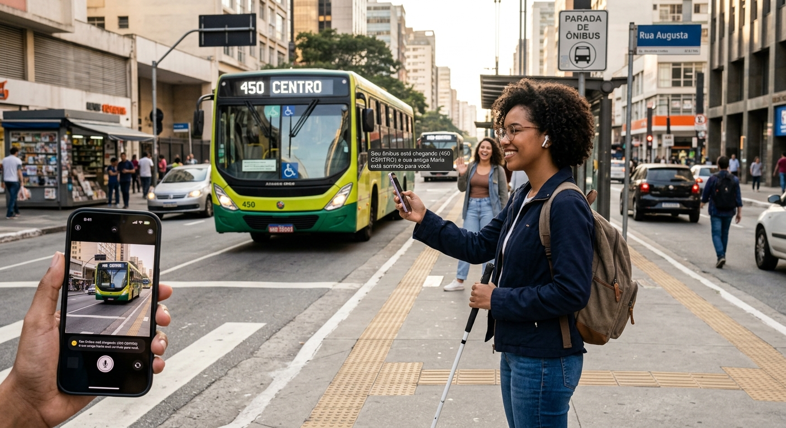

Construindo pontes, não barreiras
A exclusão digital não é um acidente, ela é uma falha de design. Quando usamos a Inteligência Artificial, nosso papel não é substituir o afeto humano, mas amplificá-lo. Queremos criar ferramentas que traduzam o silêncio, descrevam as cores e abracem a diversidade da mente humana.
Como a IA está mudando vidas
Exemplos reais de como a união entre empatia e algoritmo transforma o cotidiano.
Ouvindo o mundo através da câmera
Imagine apontar o celular para a rua e uma voz amigável descrever: "Seu ônibus está chegando" ou "Sua amiga Maria está sorrindo para você". Ferramentas de IA generativa já estão devolvendo autonomia e independência para milhares de pessoas com deficiência visual todos os dias.

Quem ensina as máquinas a pensar?
A IA aprende com o que mostramos a ela. Se não tivermos pessoas negras, mulheres, pessoas com deficiência e diferentes culturas nas equipes de programação, corremos o risco de ensinar nossos preconceitos às máquinas. A inclusão começa muito antes de o código ir para o ar: ela começa na contratação.
Quebrando as barreiras da comunicação
Tradução em tempo real, geração de legendas dinâmicas e avatares que traduzem texto para Libras. A Inteligência Artificial está transformando a comunicação digital, garantindo que todas as vozes sejam ouvidas, não importa como a pessoa escolha se expressar.

Vozes da Inclusão
Escute e veja quem está fazendo a diferença agora.
▶️ Documentário: O Futuro é Acessível
Ler transcrição do vídeo
[Música suave e inspiradora começa]
[Visual] Um jovem cego toca a tela do celular; a tela brilha e um aplicativo responde por voz.
[Voz de Marina, Desenvolvedora] "Quando nós construímos algo acessível, não estamos fazendo um 'favor'. Estamos garantindo um direito humano fundamental."
🎧 Podcast: Empatia Digital (Ep. 12)
Ler transcrição do podcast
[Apresentadora] Bem-vindos de volta. Hoje vamos falar sobre como pequenas mudanças no código geram impactos gigantescos.
[Convidado] Exato! Comece testando seu site apenas com o teclado. Se você não consegue navegar, uma pessoa com deficiência motora também não vai conseguir.